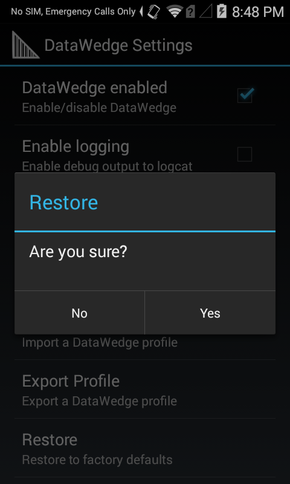

概述
本指南涵盖 DataWedge 应用程序的设置，包括启用和禁用设备上的 DataWedge、导入报告以及用于备份和大规模部署的配置文件 (Profile) 和配置文件 (Configuration file) 的管理。有关创建和实施配置文件和插件的信息，请参阅配置文件指南。
DataWedge 设置
本指南中提及的大多数功能可通过 DataWedge“设置”面板进行访问。
要访问 DataWedge 设置：
1.从“配置文件”屏幕中，轻触“汉堡”菜单并选择“设置”，如下突出显示。将显示类似于步骤 2 中的图像的 DataWedge“设置”面板。 从“配置文件”屏幕中访问 DataWedge“设置”面板。
从“配置文件”屏幕中访问 DataWedge“设置”面板。
2.轻触所需功能以调用它或更改其状态。 DataWedge“设置”面板
DataWedge“设置”面板的功能：
- DataWedge 已启用 - 控制 DataWedge 服务。取消选中此框以在设备上禁用 DataWedge，并将扫描硬件的控制权返回给系统。
- 启用日志记录 - 允许 DataWedge 输出日志，以使用 Logcat 或者在 Android Studio 中或其他兼容的查看器中查看。
- 忽略已禁用配置文件 - 阻止 DataWedge 切换到未启用的配置文件。在这类情况下，会忽略配置文件切换，并且当前配置文件会保持活动状态。必须禁用 Profile0 才能使用此功能。
- 已禁用的应用程序列表 - 在设备的任何位置禁用选定应用程序和/或活动的扫描功能。查看更多信息。
- 导入 - 调用导航用于从设备存储导入 DataWedge 配置文件，从而替换当前 DataWedge 设置。查看更多信息。
- 导出 - 将当前 DataWedge 配置导出至设备存储。查看更多信息。
- 导入配置文件 - 调用导航用于从设备存储导入 DataWedge 配置文件。如果 DataWedge 中已存在同名配置文件，则将更新现有配置文件的设置，使其与所导入文件的设置相匹配。查看更多信息。
- 导出配置文件 - 将单个 DataWedge 配置文件导出至设备存储。查看更多信息。
- 恢复 - 在设备上将 DataWedge 返回到出厂默认设置。查看更多信息。
日志记录
DataWedge 提供输出系统日志消息的选项，以便通过 Logcat 命令行工具、Android Studio 或其他兼容的查看器（通常通过 USB 连接）进行查看。
要启用/禁用日志记录：
从 DataWedge“设置”面板中，轻触“启用日志记录”以根据需要启用或禁用日志记录。
忽略已禁用配置文件
此功能可阻止使用 SwitchToProfile API 的应用程序切换到已禁用的配置文件。例如，这可以用于阻止旨在进行以下操作的活动：禁止切换到使扫描器保持已启用状态的配置文件。会忽略切换到已禁用扫描器的尝试；不会进行切换。
要启用此功能，必须禁用 Profile0。
从 DataWedge“设置”面板中，轻触“忽略已禁用配置文件”以根据需要进行启用或禁用：

禁用应用程序
DataWedge 可以禁止某些应用程序访问其数据捕获服务。这可以作为一种安全措施，以确保将已获取的数据只发送到已批准的应用程序，或仅作为控制哪些应用程序有权访问扫描器的一种手段。默认情况下，所有应用程序均具有访问权限。
要禁用应用程序的数据捕获：
从 DataWedge“设置”面板中，轻触“已禁用的应用程序列表”：

将出现一个列表，显示所有已安装的应用程序和软件包，类似于下图。轻触一个或多个应用程序或活动以添加到已禁用列表，必要时进行滚动。

注意：
- 与特定配置文件关联的应用程序/活动无法禁用。
- 已禁用的应用程序/活动不能与配置文件关联。
- 禁用父软件包将禁用其所有活动。
- 已禁用的活动不会禁用父级或它的其他活动。
禁用 DataWedge
条码扫描硬件的控制具有排他性。DataWedge 处于活动状态时，应用程序的扫描器和条码 API（例如“企业浏览器”和其他内容）将无法正常工作。同样，“企业浏览器”等应用程序控制扫描硬件时，锁定其他应用程序（包括 DataWedge）。因此，了解如何控制设备的扫描器硬件非常重要，如有必要，在完成扫描时将其对其他应用程序释放。
要禁用 DataWedge：
1.启动 DataWedge 并导航到“配置文件”列表（如果默认情况下未显示）。
2.轻触“汉堡”菜单并选择 -> 设置：
3.取消选中“DataWedge 已启用”复选框。将扫描器硬件的控制权返回给系统。
要了解如何以编程方式访问 DataWedge，请参阅 DataWedge API。
大规模部署
在设备上根据需要设置和配置 DataWedge 之后，可将设置保存到文件中，手动或使用移动设备管理 (MDM) 系统将此设置分发到其他设备。DataWedge 6.5 中引入了对已导入配置文件兼容性的改进。使用 DataWedge 6.5（或更高版本）创建的配置文件将对运行 DataWedge 6.5 或更高版本的任何 Zebra 设备型号有效。有关更多信息，请参阅导出配置文件。
导出配置
在设备上根据需要设置和配置 DataWedge 之后，可导出其设置文件、分发到其他设备以及自动导入和激活（或手动导入，如上所述）。
要导出 DataWedge 配置文件：
1.从 DataWedge“设置”面板中，轻触“导出”，如下突出显示。
将显示类似于步骤 2 的屏幕。
2.如果存在多个存储设备，轻触所需的存储设备，然后轻触“导出”。仅可选择存储设备；路径将自动插入。

注意：
- DataWedge 配置文件始终命名为
datawedge.db。 - 已导出配置文件的默认路径和文件名为：
/storage/sdcard0/Android/data/com.symbol.datawedge/files/datawedge.db - 如果安装了外置 SD 卡，则可选择备用路径。例如：
/storage/sdcard1/Android/data/com.symbol.datawedge/files/datawedge.db
3.从设备中检索文件 datawedge.db 并手动或通过移动设备管理 (MDM) 系统分发到其他设备。
导出配置文件
在设备上根据需要设置和配置 DataWedge 配置文件之后，就可将其导出和分发，以便在整个企业中的其他设备上使用。这使公司能够微调对特定应用程序数据的获取、处理和处置设置，并轻松地将这些设置传播给企业中的其他人。
注意：
- 如果同时创建、导出和分配多个配置文件，则可以使用导出配置将配置文件一起创建和导出为单个 DataWedge 配置文件。
- 如果设备上的配置文件与正在导入的同名，则现有配置文件将被导入的配置文件覆盖。
- 使用 DataWedge 6.5（或更高版本）创建的配置文件将对运行 DataWedge 6.5 或更高版本的任何 Zebra 设备型号有效。有关更多信息，请参阅跨设备导入。
要导出配置文件：
1.从 DataWedge“设置”面板中，轻触“导出配置文件”，如下突出显示。将在设备上显示类似于步骤 2 中的图像的配置文件列表。
2.如果存在多个存储设备，请轻触所需的存储设备，接着轻触要导出的配置文件的名称，然后轻触“导出”。仅可选择存储设备和配置文件；路径将自动插入。
已导出配置文件的默认路径和文件名为： /storage/sdcard0/Android/data/com.symbol.datawedge/files/dwprofile_profilename.db
如果安装了外置 SD 卡，则可选择备用路径： /storage/sdcard1/Android/data/com.symbol.datawedge/files/dwprofile_profilename.db
3.从设备检索导出的文件并手动或通过移动设备管理 (MDM) 系统分发到其他设备。
请勿重命名导出的文件。这样操作将导致错误和导入失败。
使用 DataWedge 6.5（或更高版本）创建的配置文件将对运行 DataWedge 6.5 或更高版本的任何 Zebra 设备型号有效。
导入配置
DataWedge 可以接受在另一设备上创建的设置，并通过导入 DataWedge 配置文件在整个企业中分发。此文件包含配置文件、插件和所有 DataWedge 设置，包括其状态（已启用/已禁用）、日志记录和其他可配置参数。
导入配置文件将覆盖之前存储在设备上的所有 DataWedge 设置和配置文件。
要导入 DataWedge 配置文件：
1.从 DataWedge“设置”面板中，轻触“导入”。将显示类似于步骤 2 的屏幕，如下所示。
2.使用提供的界面在设备存储上导航至已导入文件：
 已导入设置立即生效并覆盖所有之前的设置。
已导入设置立即生效并覆盖所有之前的设置。
DataWedge 配置文件始终命名为 datawedge.db。
有关更多信息，请参阅跨设备导入。
导入配置文件
导入配置文件可启用在其他位置创建的设置以将其在设备上快速激活。这使企业能够在测试实验室中开发和微调配置文件，例如在将其导出并部署到现场或整个企业之前。有关更多信息，请参阅导出配置文件。
尽管配置文件 (Profile) 导入流程与配置文件 (Configuration file) 的类似，但配置文件本身却大不相同。配置文件 (Profile) 是一组设置，用于控制 DataWedge 与一个或多个特定应用程序和设备交互的方式。配置文件 (Config file) 可以包含许多配置文件 (Profile) 以及其他 DataWedge 设置。
导入配置文件 (Config file) 将覆盖所有之前的 DataWedge 设置和配置文件 (Profile)。导入配置文件只需将导入的配置文件添加到设备上可用配置文件的列表中。如果设备上的配置文件与正在导入的配置文件同名，则导入的配置文件将修改现有配置文件。
导入配置文件时存在重复的关联应用程序。如果当前的配置文件与正在导入的配置文件之间存在重复的关联应用程序，则正在导入的配置文件将不会生效。例如，如果当前的配置文件 A 配置了关联的应用程序，并且该应用程序又与配置文件 B 关联，则在导入配置文件 B 时，由于重复，导入不会生效。
如果某个应用程序在已禁用的应用程序列表中列出，而该应用程序又是正在导入的配置文件中的关联应用程序，则同样适用 - 导入不会生效，该应用程序仍保留在已禁用的应用程序列表中。
要导入 DataWedge 配置文件：
1.从 DataWedge“设置”面板中，轻触“导入配置文件”，如下突出显示。将显示类似于步骤 2 的屏幕。
2.使用提供的界面从设备存储导航到要导入的文件： 警告：如果设备上的配置文件与正在导入的配置文件同名，则导入的配置文件将修改现有配置文件。
警告：如果设备上的配置文件与正在导入的配置文件同名，则导入的配置文件将修改现有配置文件。
DataWedge 配置文件命名约定：dwprofile_<profilename>.db。
跨设备导入
使用 DataWedge 6.5（或更高版本）从设备导出的配置文件和配置文件可导入到运行 DataWedge 6.5（或更高版本）的其他设备，即使源设备和目标设备包含不同的扫描和/或成像外围设备也是如此。为了适应硬件差异，DataWedge 6.5 实施以下用户界面更改。
外围设备不存在，“自动”未选中
如果为目标设备不支持的扫描器配置源配置文件，则在为配置文件选择扫描器时将显示类似于下面图像的对话框。例如，Zebra TC75 带有摄像头；TC51 不带摄像头。如果为 TC75 上创建的摄像头配置的配置文件是由 TC51 导入的，则会显示下面的消息，提示用户选择外围设备以进行扫描。选择之后，DataWedge 将输入设置（即解码器参数等）作为源扫描设备的最初配置应用于目标设备上的手动选定外围设备。
 如果未选择“自动”设备（单选按钮），则显示图像
如果未选择“自动”设备（单选按钮），则显示图像
外围设备不存在，选择“自动”
如果目标设备中不支持原始设备中的选定扫描器，但选择“自动”复选框和“自动”单选按钮（如下所示），则 DataWedge 会将输入设置（即解码器参数等）作为源扫描设备的最初配置应用于目标设备上自动选定的外围设备。
 如果选择了“自动”设备（单选按钮），则显示图像
如果选择了“自动”设备（单选按钮），则显示图像
从 DataWedge 6.4（和更低版本）转换
通过将设备升级到 DataWedge 6.5（或更高版本）和导入（如有必要）以及导出文件，DataWedge 可以隐藏驻留在（或已使用）包含 DataWedge 6.5 之前版本的设备的配置文件 (Config file) 和配置文件 (Profile)。这仅适用于运行 KitKat 的设备；运行 Marshmallow（和更高版本）的设备已有 DataWedge 6.5（或更高版本）。
重要说明：要出于转换文件目的而升级的设备必须与制作原始文件的设备型号相同。例如，必须将 TC70 上使用 DataWedge 旧版本制作的配置文件导入到在 TC70 上运行的 DataWedge 6.5（或更高版本）。
恢复（默认值）
DataWedge 能够重置所有用户配置的设置，将其恢复为原始出厂默认值。小心：此操作无法撤消。
还可使用恢复配置 API 执行此功能。
要将 DataWedge 恢复为其出厂默认设置：
1.从 DataWedge“设置”面板中，轻触“恢复”，如下突出显示。将显示类似于步骤 2 中的图像的确认屏幕。
2.轻触“是”以恢复出厂默认值（轻触“否”以取消）。
Enterprise 文件夹
在 Zebra 设备上，在设备上执行企业重置后，内部存储包含一个保留（未擦除）且名为 /enterprise 的目录。DataWedge 将其文件存储在 /enterprise 以下几个目录中，这使其在企业重置后保留。
目录行为：
/enterprise/device/settings/datawedge/enterprisereset/- DataWedge 在企业重置后检查此文件夹，并导入存在的配置文件 (configuration file) 和/或任何配置文件 (Profile)。/enterprise/device/settings/datawedge/autoimport- DataWedge 在其运行时监控此文件夹，并立即导入并激活此处放置的任何配置文件，覆盖之前的设置。请参阅下面的“自动导入”。
注意：
- DataWedge 恢复操作将删除工作 .db 文件。
- 恢复出厂设置将删除
/enterprise文件夹中的所有文件。 - 如果
datawedge.db文件存在于/enterprisereset目录中，则 DataWedge 会将其激活，作为新的工作配置文件。
自动导入
DataWedge 支持通过可用的商用第三方移动设备管理 (MDM) 系统将配置文件 (Config file) (datawedge.db) 和配置文件 (Profile) (dwprofile_profilename.db) 远程部署到设备。当 DataWedge 启动时，它会检查 /enterprise/device/settings/datawedge/autoimport 目录是否存在此类文件。如果未找到任何此类文件，则它执行以下功能。
DataWedge 自动导入例程：
- 导入新文件。
- 替换现有配置文件和名称相似的配置文件（如有）
- 删除导入的文件
- 使新设置立即生效
DataWedge 正在运行时，每当配置文件 (Config file) 或配置文件 (Profile) 放置在 /autoimport 文件夹中并执行相同的四个功能时，它会收到系统通知。
重要说明：
- 为获得最佳体验，Zebra 强烈建议用户在远程部署新配置文件之前退出任何 DataWedge 配置 UI 屏幕。
- 在运行 Android KitKat 或更高版本的设备上，无法使用“文件资源管理器”或其他用户级工具看到
/enterprise文件夹。将配置文件移动到和自/autoimport或/enterprisereset文件夹必须通过编程方式完成，或者使用部署客户端应用程序或 MDM 完成。 - 只要文件名显示在
/autoimport文件夹中，早于 6.9 的 DataWedge 版本就将尝试使用任何被监控的“.db”文件。因此，DataWedge 可以在完全写入文件之前尝试使用该文件。要避免出现此情况，Zebra 建议最初使用备用扩展名（即“.tmp”）存储文件，并在写入完成后将扩展名更改为 .db。 - Zebra 建议将显式文件权限应用到所有 .db 文件，以便 DataWedge 不会受到任何其文件程序的阻碍。
报告
DataWedge 6.6（和更高版本）可以报告设备配置文件的导入结果。这些 HTML 报告显示原始（源）数据库和目标设备之间的设置差异。这使管理员可以轻松识别差异并进行调整，以弥补一个设备到另一设备的硬件或软件功能差异。报告始终将目标设备用作比较传入设置文件的基础。
 DataWedge 6.6 中添加的报告。
DataWedge 6.6 中添加的报告。

“报告”面板的功能：
- 报告已启用 - 用于导入操作后启用或禁用报告生成。默认情况下禁用。请参阅以下“注意”。
- 生成报告用于 - 允许仅为“手动”导入、仅为“自动”导入或这两种导入生成报告。
- 手动导入后显示报告 - 在设备上显示使用默认浏览器生成的报告。支持仅为“手动”导入。
注意：如果在导入启用报告的完整数据库文件之前在 DataWedge 中禁用报告，则在操作后，在 DataWedge 中启用报告。
可使用设置报告选项 API 配置此功能的参数。
文件名和位置
这些文件名始终相同：
datawedge.db- 要导入的（已导出）DataWedge 配置数据库dw_report_for_full_config.html- 导入后生成的报告datawedge.db
这些文件名与配置文件名称相对应：
dwprofile_<profile_name>.db- 要导入的单个（已导出）配置文件dw_report_for_profile_<profile_name>.html- 导入配置文件后生成的报告dwprofile_<profile_name>.db
文件通常位于以下设备目录中：
/Android/data/com.symbol.datawedge/files
报告参数
DataWedge 报告中目前支持以下参数类别：
- DECODER
- DECODER_PARAMS
- READER_PARAMS
- SCAN_PARAMS
- UDI_PARAMS
- UPCEAN_PARAMS
报告格式
导入完整的 datawedge.db 文件和特定于配置文件 dwprofile_<profile_name>.db 的文件时，报告信息稍有不同。导入任一文件类型都会生成类似如下所示的摘要，最后两个字段显示特定于该文件类型的信息。

摘要元素，完整数据库导入：
- DataWedge 版本 - 在目标设备上安装此版本。
- 源 DataWedge 版本 - 在源设备中安装此版本，并用于生成导入的文件。
- 当前设备 - 生成报告的设备型号。
- 源设备 - 创建已导入数据库设备的型号。
- 导入时间 - 导入操作的日期和时间。
- 导入模式 - 指示手动或自动导入。
- 配置文件 - 导入的数据库文件的完全限定路径。
- DataWedge 已启用* - 报告导入操作后 DataWedge 的状态。
- DataWedge 日志记录* - 报告导入操作后 DataWedge 日志记录的状态。
* 此字段因配置文件数据库报告而异。
摘要元素，配置文件数据库导入：
- DataWedge 版本 - 在目标设备上安装此版本。
- 源 DataWedge 版本 - 在源设备中安装此版本，并用于生成导入的文件。
- 当前设备 - 生成报告的设备型号。
- 源设备 - 创建已导入数据库设备的型号。
- 导入时间 - 导入操作的日期和时间。
- 导入模式 - 指示手动或自动导入。
- 配置文件 - 导入的数据库文件的完全限定路径。
- 配置文件名称* - 表示已导入配置文件的名称。
- 配置文件已启用* - 报告导入操作后已导入配置文件的状态。
* 此字段因完整数据库报告而异。
配置文件摘要
完整数据库导入可以包含任意数量的单个配置文件。完整数据库导入的报告包括已导入配置文件列表，如下图所示。轻触配置文件名称以显示该配置文件的报告。导入单个配置文件时，配置文件摘要包含单个条目。

配置文件报告
为每个导入的配置文件生成的报告指示当前为该配置文件选择的扫描器，以及是否启用插件并在不支持所选设备的情况下设置为自动选择不同扫描设备（有关更多信息，请参阅跨设备导入）。
受影响的参数 - 部分在源和目标数据库中列示包含不同值的参数。上面的示例报告显示了四个这样的参数：两个用于解码器，一个用于读取器，一个用于扫描参数。
未更改的参数 - 部分列示包含从其默认值更改已导入文件但在目标设备中仍适用的值的参数。
注意：除非其无法应用或在目标中具有不同默认值，否则不会报告源设备中其默认状态下的设置。
扫描器参数摘要
本部分列示当前设备上支持的扫描器和所有导入参数的兼容性。摘要之后，呈现每个支持的扫描器的某个部分，其列示不支持的参数、现有参数和新参数默认设置中的更改以及其设置。

不支持的参数 - 是从目标设备无法识别的源设备导出的参数。
默认值已更改的参数 - 是两个设备均支持但具有不同默认值的参数。
新参数 - 是当前设备中支持但在源设备中无法找到或不受支持的参数。
用户通知
当一个或多个已导入设置在目标设备上无相应设置时，将显示用户通知。例如，下图所示报告列出了目标设备缺失（至少尚未配置一次）的已导入数据库中存在的三个扫描器。
 示例用户通知
示例用户通知
注意：导入通过 DataWedge 6.6.5 之前版本生成的数据库将没有源信息，因此在导入时生成“不完整的报告”。
可使用设置报告选项 API 配置此功能的参数。
编程备注
在一个应用程序中捕获数据和照片
如果应用程序是以此目的进行设计的，则可以使用相同的应用程序进行拍照和捕获条码数据。
- 在应用程序中添加单独的活动：一个用于条码扫描，另一个用于拍照。
- 创建具有以下设置的 DataWedge 配置文件：
- 将配置文件与拍照活动关联
- 在配置文件中禁用扫描
- 使用标准 Android-SDK API 来控制摄像头
- 应用程序用于扫描时，默认 DataWedge 配置文件将生效。
- 为访问特定的解码器、处理规则或其他特殊扫描需求，可创建第二个 DataWedge 配置文件，并将其与应用程序的条码扫描活动关联。
示例导入代码
可以修改以下 Java 代码示例以满足个人需求。
//NOTE: This Java code for demo purposes only; it should not be used without testing. InputStream fis = null; FileOutputStream fos = null; String autoImportDir = "/enterprise/device/settings/datawedge/autoimport/"; String outputFileName = "datawedge.db"; try { // Open the db as the input stream fis = context.getAssets().open("datawedge.db"); } catch (IOException ex) { Log.e("DEMO",ex.getMessage()); } // create a File object for the parent directory File outputDirectory = new File(autoImportDir); // create a temporary File object for the output file File outputFile = new File(outputDirectory,outputFileName); // attach the OutputStream to the file object try { fos = new FileOutputStream(outputFile); }catch (FileNotFoundException ex){ Log.e("DEMO",ex.getMessage()); } // transfer bytes from the input file to the output file byte[] buffer = new byte[1024]; int length; int tot = 0; try { while ((length = fis.read(buffer)) > 0) { fos.write(buffer, 0, length); tot += length; } } catch (IOException ex){ Log.e("DEMO",ex.getMessage()); } Log.d("DEMO",tot+" bytes copied"); //flush the buffers try { fos.flush(); } catch (IOException ex) { Log.e("DEMO",ex.getMessage()); } //release resources try { fos.close(); }catch (Exception e){ }finally { fos = null; //set permission to the file to read, write and exec. outputFile.setExecutable(true, false); outputFile.setReadable(true, false); outputFile.setWritable(true, false); }